Caballero Hidalgo
Reglas del Juego
🎯 Objetivo del Juego
El objetivo es ser el primer jugador en equiparse los cuatro complementos necesarios para derrotar al gigante que se ha apoderado de una ínsula y convertido a su princesa en bronce.
🎴 Tipos de Cartas
📦 Cartas de Complemento
Te permiten equipar directamente un elemento:
Rocín
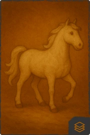
Equipa tu caballo
Lanza
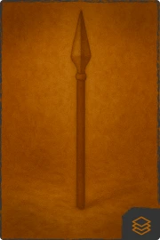
Equipa tu arma
Yelmo
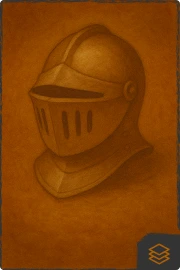
Equipa tu protección
Escudero
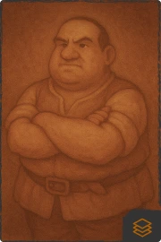
Equipa tu ayudante
⚔️ Cartas de Sabotaje
Te permiten atacar a otros jugadores:
Flaqueza y mala traza
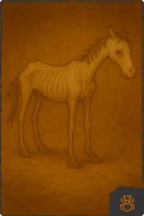
Sabotea el rocín de un jugador o su protección
Duelo con vizcaíno
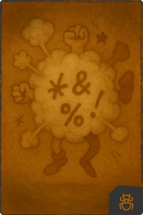
Sabotea la lanza de un jugador o su protección
Bacía de barbero
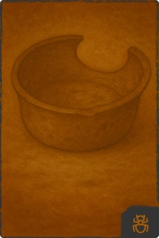
Sabotea el yelmo de un jugador o su protección
Pies a tierra
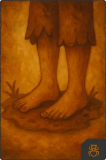
Sabotea el escudero de un jugador o su protección
🔄 Cartas de Doble Acción
Te permiten realizar acciones especiales:
A caballo regalado
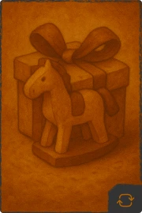
Protege tu rocín o roba el de otro jugador. Si está protegido, descarta la protección
De tal palo
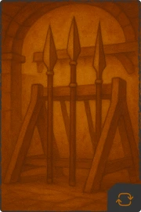
Protege tu lanza o roba la de otro jugador. Si está protegida, descarta la protección
Barbas veas cortar
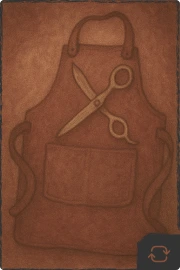
Protege tu yelmo o roba el de otro jugador. Si está protegido, descarta la protección
Oferta de ínsula
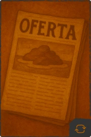
Protege tu escudero o roba el de otro jugador. Si está protegido, descarta la protección 4 nuevas
🎲 Cartas de Evento
Efectos especiales que afectan a todos:
Libros de caballería
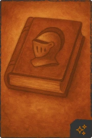
Roba la primera carta de complemento del mazo. Luego juega una de tu mano
Cuchicheos de ventero
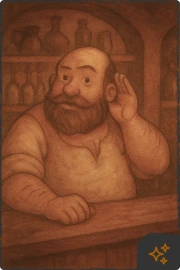
Revisa las cartas de otro jugador y cambia una de las tuyas por una de las suyas
Doncella en apuros
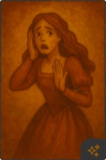
Envía a un jugador a salvar a una doncella haciendo que pierda su turno
Vuelta a casa
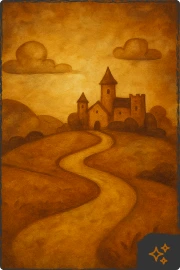
Descarta todas tus cartas y roba 4 nuevas
Princesa micomicona
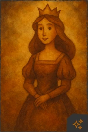
Selecciona a un jugador para que vuelva a casa y cambie su mano por una nueva
Molino de viento
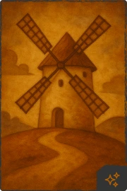
Convierte al gigante en un molino de viento durante una ronda
🛡️ Cartas de Protección
Protegen tus equipamientos:
Bálsamo de fierabrás

Protege un complemento que tengas equipado
🎮 Cómo Jugar
- Inicio: Cada jugador recibe 4 cartas iniciales.
- Turno: En tu turno puedes jugar una carta de tu mano.
- Robar: Al final de tu turno, roba una carta del mazo.
- Equipar: Usa cartas de complemento para equipar elementos.
- Atacar: Usa cartas de sabotaje para molestar a otros jugadores.
- Proteger: Usa cartas de protección para defender tus equipamientos.
🏆 Condiciones de Victoria
Para derrotar al gigante, necesitas tener equipados los 4 complementos (rocín, lanza, yelmo y escudero) al mismo tiempo.
Además, es necesario que el gigante no esté en su forma de molino de viento. Por lo que si
se convierte en molino de viento, deberás aguantar con el equipaje hasta que vuelva a su forma normal.
💡 Estrategias
- Mantén cartas de protección para defender tus equipamientos.
- Usa cartas de sabotaje para cortar el avance de los otros caballeros hidalgos.
- Las cartas de doble acción pueden cambiar el curso del juego.
- No descuides robar cartas, siempre mantén opciones en tu mano.
- Observa qué equipamientos tienen otros jugadores para planificar ataques.